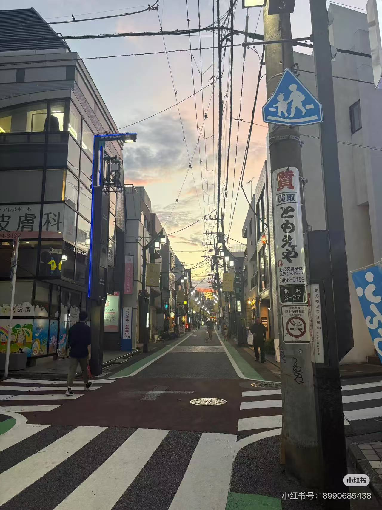

探索东京的街头巷尾
这次我深入探索了新宿和涩谷的繁华街道，也找到了几家隐藏在小巷里的美味拉面店。东京的夜晚充满了活力，霓虹灯闪烁，人群熙熙攘攘，仿佛永远不会停歇。
第一天：涩谷十字路口与忠犬八公像
涩谷的十字路口是世界上最繁忙的路口之一。当绿灯亮起，成千上万的人从四面八方涌来，场面非常壮观。在这里，你可以感受到东京的脉搏。别忘了去看看忠犬八公的铜像，那是忠诚与等待的象征。
第二天：新宿御苑与美食探索
与新宿的喧嚣形成鲜明对比的是新宿御苑的宁静。这是一个美丽的日式庭园，四季都有不同的景色。晚上，我们在“思出横丁”（回忆小巷）品尝了地道的日式烧鸟，狭窄的巷子里充满了食物的香气和人们的欢笑声。
总的来说，东京是一座充满矛盾与魅力的城市，既有尖端的科技，也保留了传统的文化。每一次探索都有新的发现。
发表评论
评论区